Rear Seat-Back Cover Replacement
Rear Seat-back Cover ReplacementSeat-back - Fold Down - 2-door
NOTE:
- Take care not to tear the seams or damage the seat covers.
- Put on gloves to protect your hands.
1. Remove the seat-back.
2. Remove these head restraint.
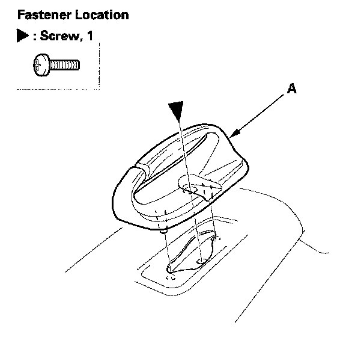
3. Remove the screw, then remove the center belt guide (A).
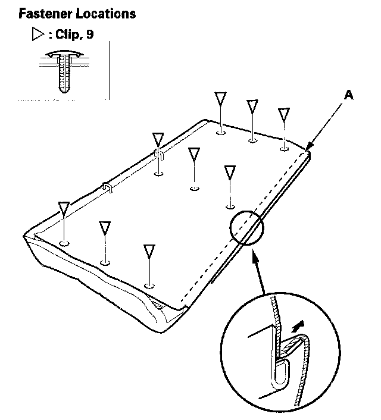
4. Release the lower hook (A), and clips.
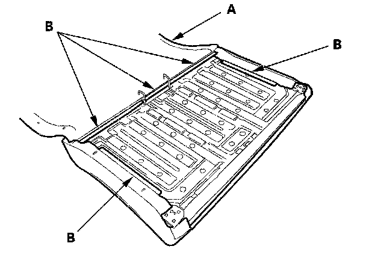
5. Pull back the seat-back cover (A), then release the hock strips (B).
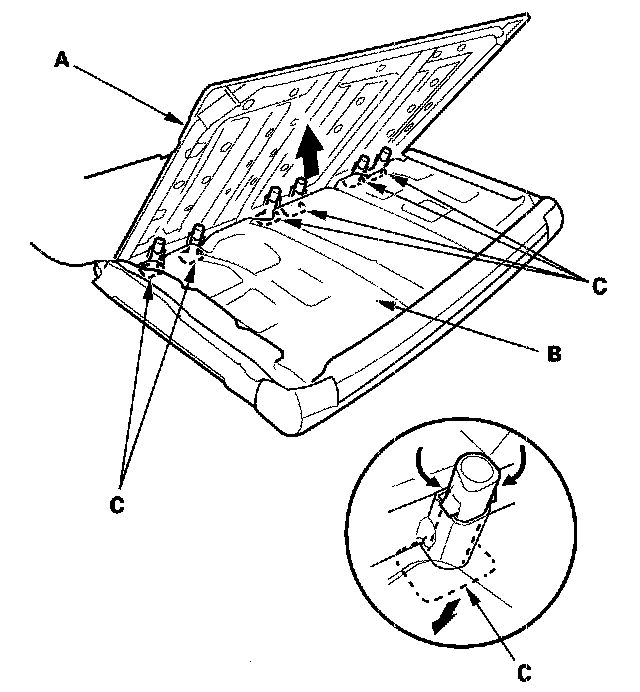
6. Pull out the seat-back frame (A) from the pad (B), then pull out the head restraint guides (C) while pinching the end of the guides, and remove them.
7. Remove the seat-back cover and pad from the seat-back frame.
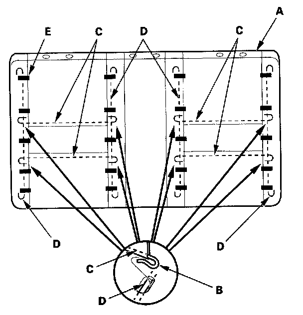
8. Pull back the edge of the seat-back cover (A) all the way around, and release the hooks (B) of the horizontal wires (C) from the vertical wires (D) on the pad, and remove the clips (E), then remove the seat-back cover.
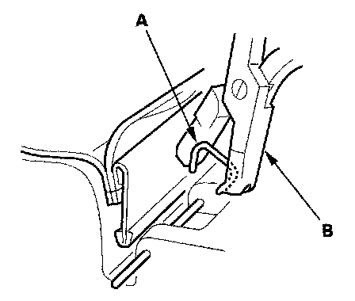
9. Install the cover in the reverse order of removal, and note these items:
- To prevent wrinkles when installing a seat-back cover, make sure the material is stretched evenly over the pad before securing the clips and hook strips.
- Replace any clips (A) you removed with new ones. Install them with commercially available upholstery ring pliers (B).
Seat-back - Fold Down - 4-door
NOTE:
- Take care not to tear the seams or damage the seat covers.
- Put on gloves to protect your hands.
1. Remove the seat-back.
2. Remove the head restraint.
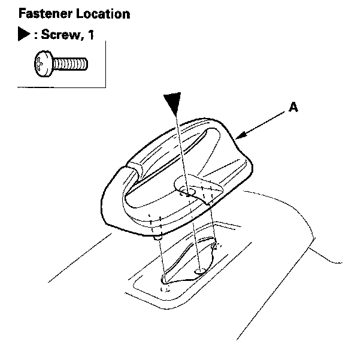
3. Remove the screw, then remove the center belt guide (A).
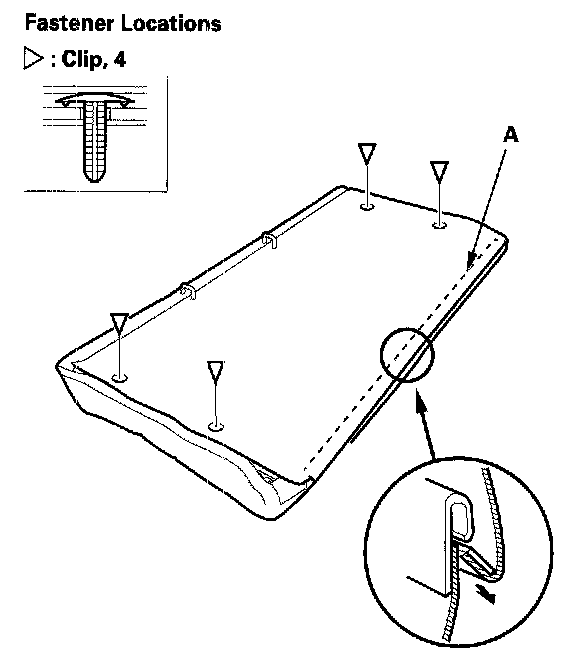
4. Release the lower hook (A), and clips.
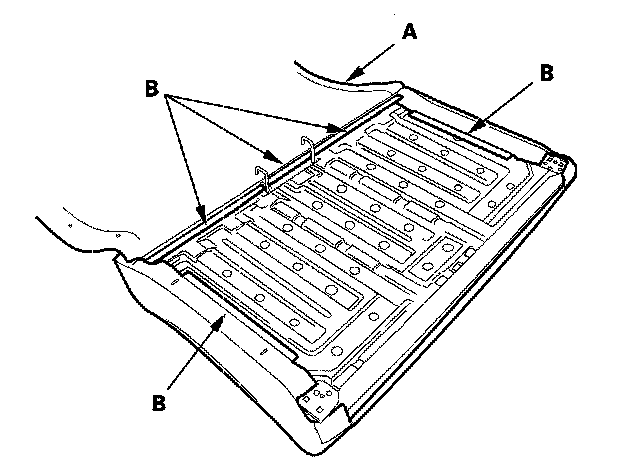
5. Pull back the seat-back cover (A), then release the hook strips (B).
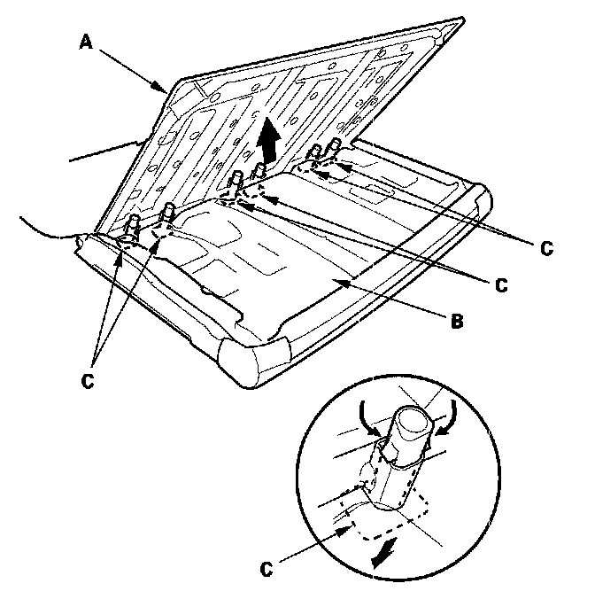
6. Pull out the seat-back frame (A) from the pad (B), then pull out the head restraint guides (C) while pinching the end of the guides, and remove them.
7. Remove the seat-back cover and pad from the seat-back frame.
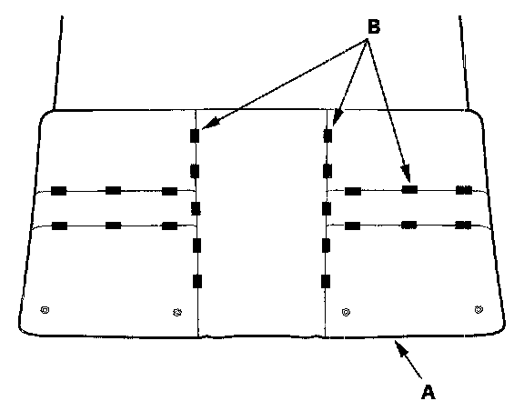
8. Pull back the edge of the seat-back cover (A) all the way around, and release the clips (B), then remove the seat-back cover.
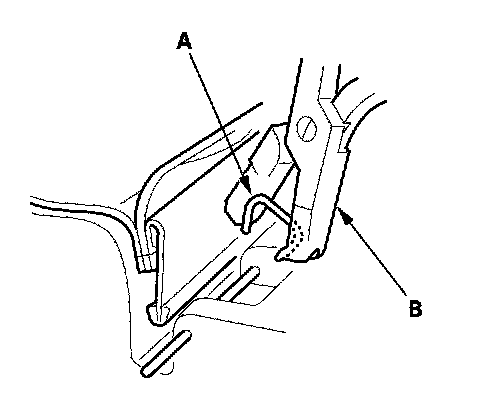
9. Install the cover in the reverse order of removal, and note these items:
- To prevent wrinkles when installing a seat-back cover, make sure the material is stretched evenly over the pad before securing the clips and hook strips.
- Replace any clips (A) you removed with new ones. Install them with commercially available upholstery ring pliers (B).
Seat-back - Split Fold Down - 2-door
NOTE:
- Take care not to tear the seams or damage the seat covers.
- Put on gloves to protect your hands.
1. Remove the seat-back.
2. Remove these head restraint
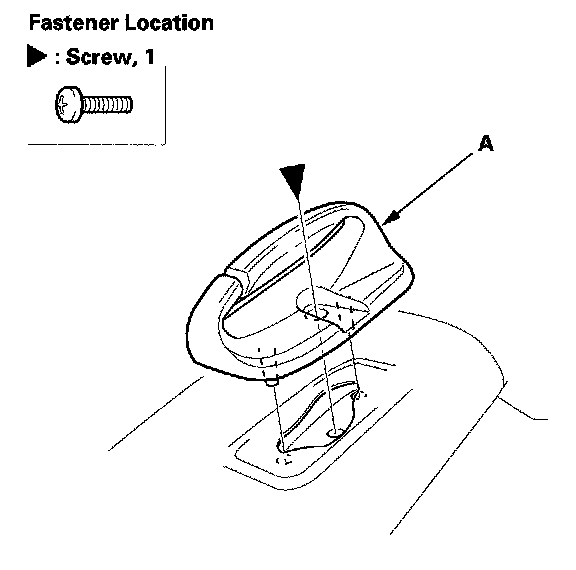
3. Left seat-back: Remove the screw, then remove the center belt guide (A).
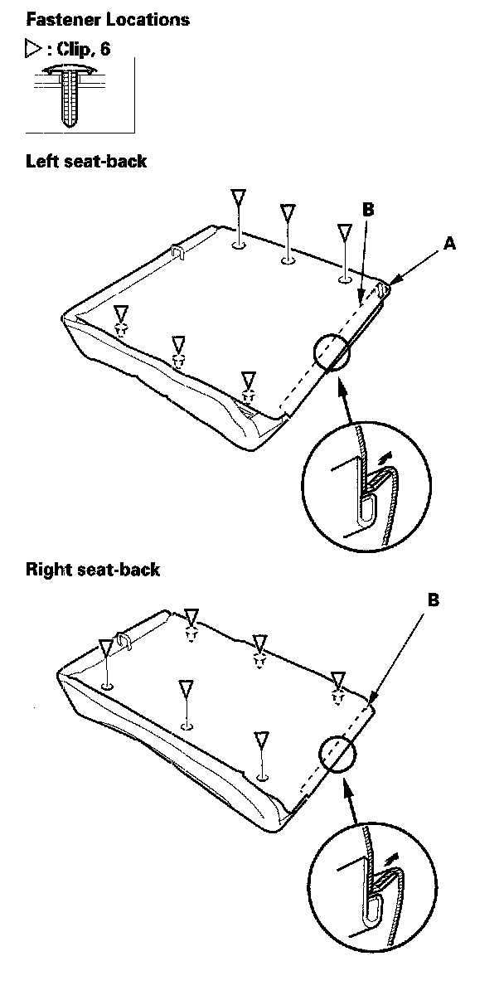
4. Release the velcro fastener (A), the lower hook (B), and clips.
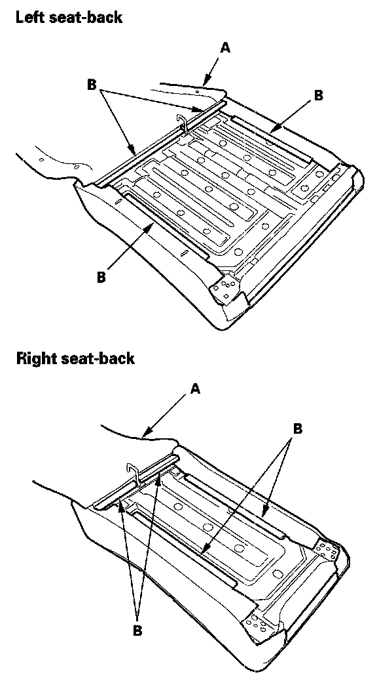
5. Pull back the seat-back cover (A), then release the hook strips (B).
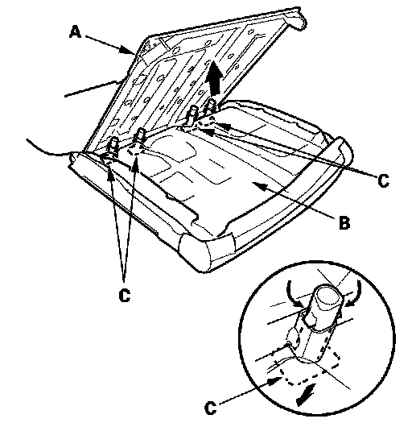
6. Pull out the seat-back frame (A) from the pad (B), then pull out the head restraint guides (C) while pinching the end of the guides, and remove them. The left seat-back is shown; the right seat-back is similar.
7. Remove the seat-back cover and pad from the seat-back frame.
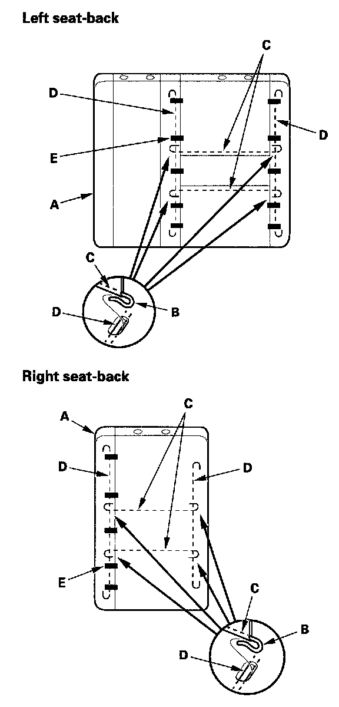
8. Pull back the edge of the seat-back cover (A) all the way around, and release the hooks (B) of the horizontal wires (C) from the vertical wires (D) on the pad, and remove the clips (E), then remove the seat-back cover.
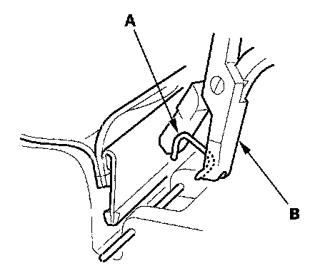
9. Install the cover in the reverse order of removal, and note these items:
- To prevent wrinkles when installing a seat-back cover, make sure the material is stretched evenly over the pad before securing the clips and hook strips.
- Replace any clips (A) you removed with new ores. Install them with commercially available upholstery ring pliers (B).
Seat-back - Split Fold Down - 4-door
NOTE:
- Take care not to tear the seams or damage the seat covers.
- Put on gloves to protect your hands.
1. Remove the seat-back.
2. Remove these items:
- Armrest
- Head restraint
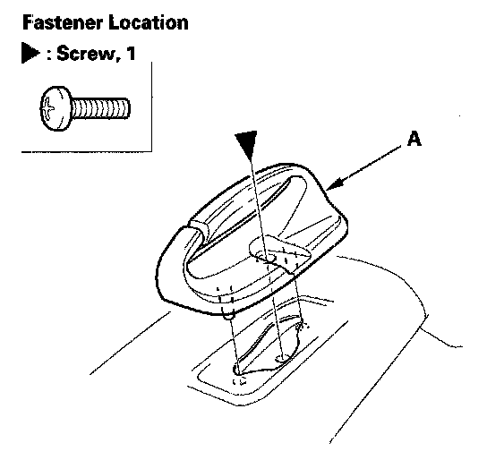
3. Left seat-back: Remove the screws, then remove the center belt guide (A).
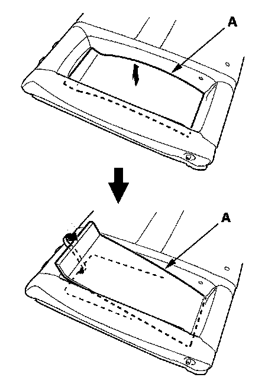
4. Left seat-back: Pull out the center portion of the armrest back panel (A) to release upper edge of the armrest back panel.
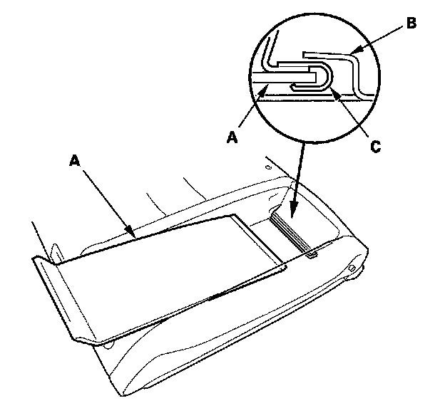
5. Left seat-back: Pull out the armrest back panel (A) to release the hook (B) from the seat-back frame and hook (C) from the seat-back cover.
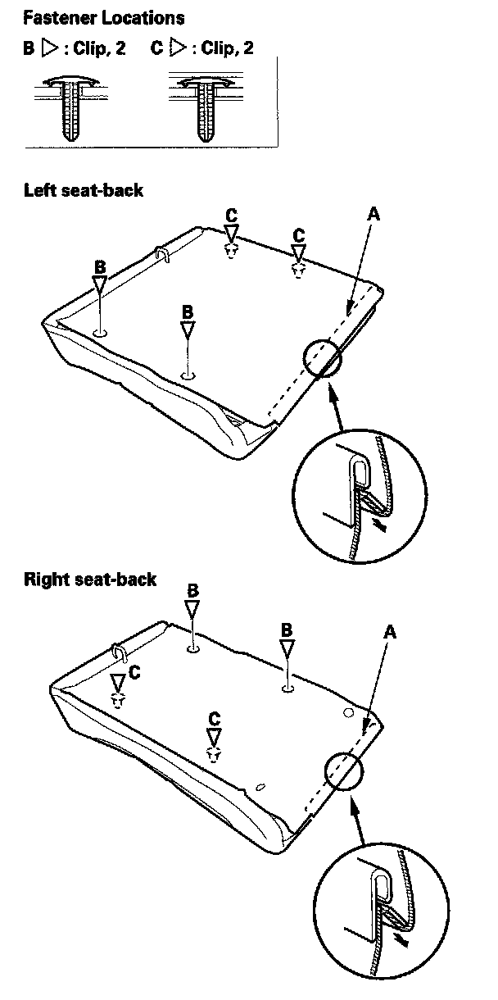
6. Release the lower hook (A), and clips (B, C).
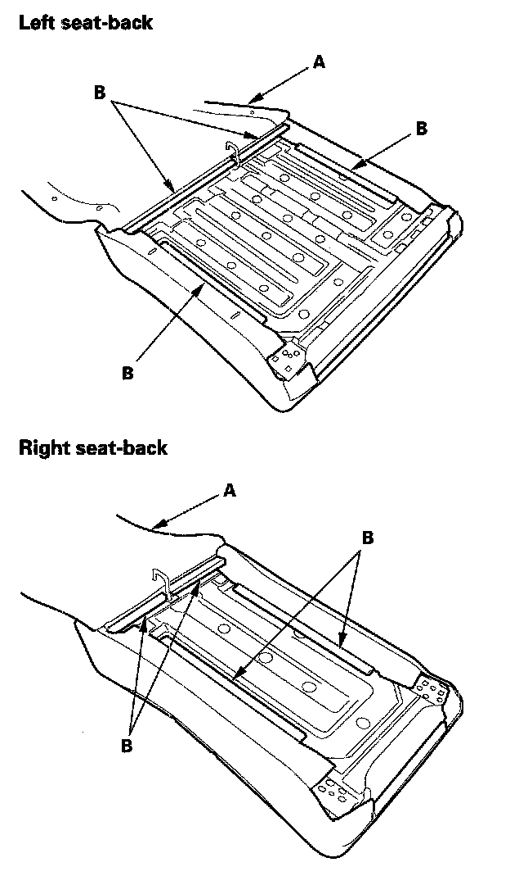
7. Pull back the seat-back cover (A), then release the hook strips (B).
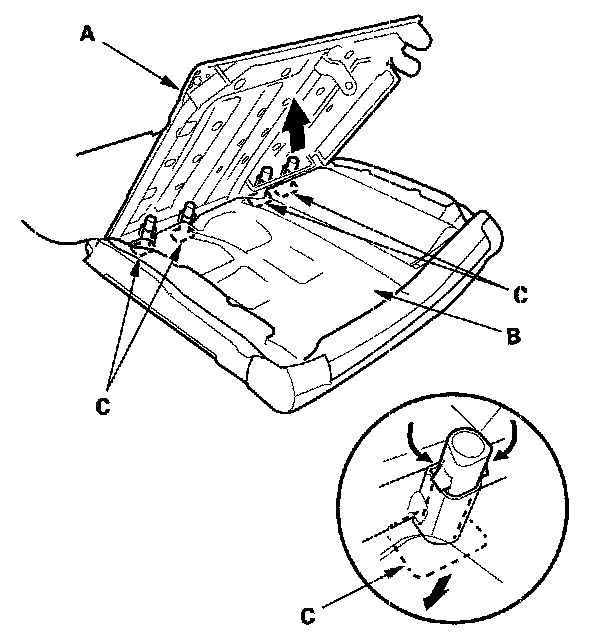
8. Pull out the seat-back frame (A) from the pad (B), then pull out the head restraint guides (C) while pinching the end of the guides, and remove them. The left seat-back is shown; the right seat-back is similar.
9. Remove the seat-back cover and pad from the seat-back frame.
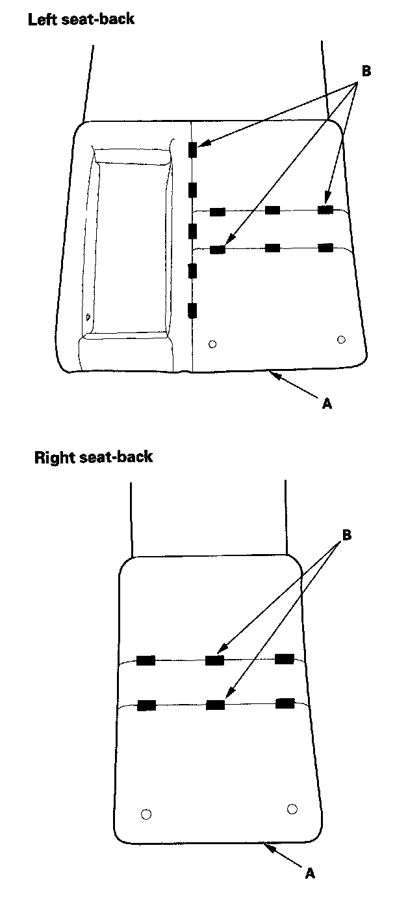
10. Pull back the edge of the seat-back cover (A) all the way around, and release the clips (B), then remove the seat-back cover.
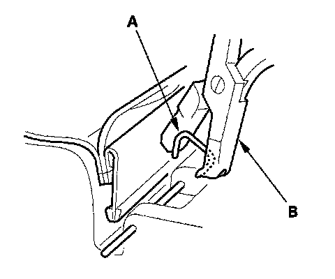
11. Install the cover in the reverse order of removal, and note these items:
- To prevent wrinkles when installing a seat-back cover, make sure the material is stretched evenly over the pad before securing the clips.
- Replace any clips (A) you removed with new ones. Install them with commercially available upholstery ring pliers (B).